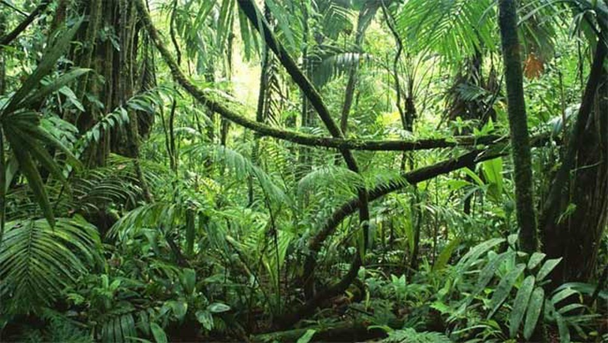
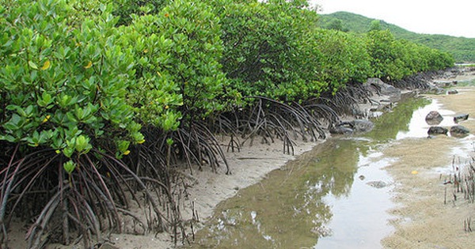
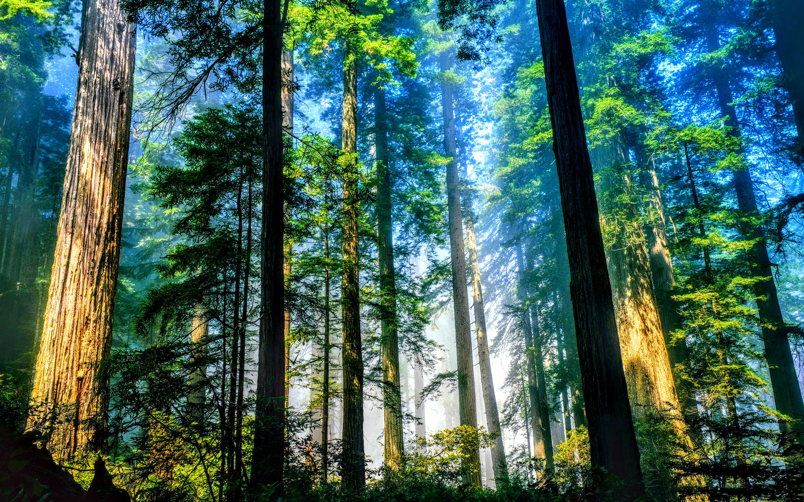
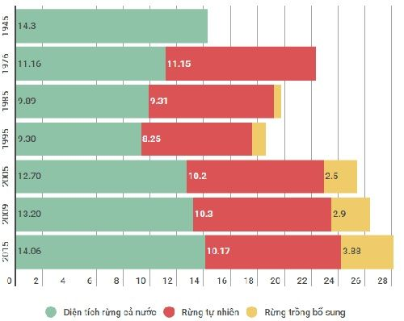

1. Hoàn thành bảng sau: Các loại đất chính ở nước ta.

Phe-ra-lít → Vùng đồi núi → Có màu đỏ hoặc vàng, thường nghèo mùn.
Phù sa → Đồng bằng → Được hình thành do sông ngòi bồi đắp và rất màu mỡ.
2. Phân biệt giữa rừng rậm nhiệt đới và rừng ngập mặn ở nước ta.
Rừng rậm nhiệt đới: Phân bố chủ yếu vùng đồi núi. Môi trường sống nóng ẩm, mưa nhiều, cây trong rừng nhiều tầng tán, đa dạng chủng loại,...
Rừng ngập mặn: Chủ yếu nơi đất thấp ven biển. Môi trường nước biển ngập chân, cây có rễ chùm to khỏe, rậm rạp,...
 3. Nêu một số tác dụng của rừng đối với đời sống.
Rừng có vai trò lớn đối với sản xuất và đời sống của con người, cho ta nhiều sản vật, nhất là gỗ. Và rừng cũng có tác dụng điều họa khí hậu, che phủ đất và hạn chế nước mưa tràn về đồng bằng gây lũ lụt
4. Tình hình rừng của nước ta hiện nay.
Rừng của nước ta đang trong thời gian bị tàn phá nghiêm trọng, diện tích và độ che phủ của rừng giảm nhanh. Diện tích đất trống đồi trọc, đất hoang tăng mạnh, nhiều động vật quý hiếm đang trong đà bị tuyệt chủng.
5. Cách bảo vệ rừng
Để bảo vệ rừng, Nhà nước cần áp dụng các chính sách sau: Trồng rừng, phủ xanh đất trống đồi trọc. Bảo vệ rừng phòng hộ, các vườn quốc gia và khu dự trữ thiên nhiên. Khai thác hợp lý rừng sản xuất, hạn chế khai hoang chuyển rừng thành đất nông nghiệp, hạn chế di dân tự do.